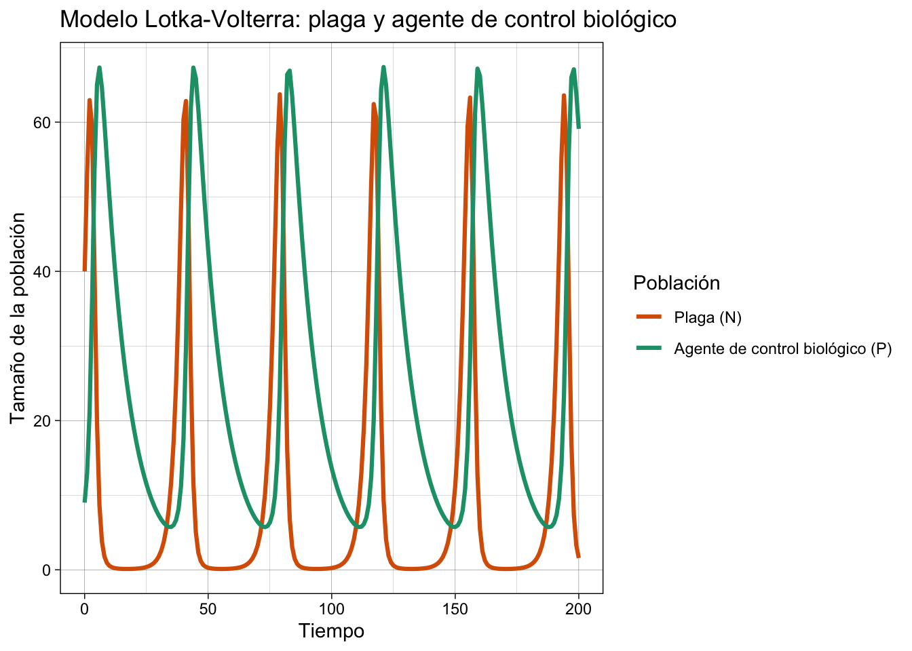
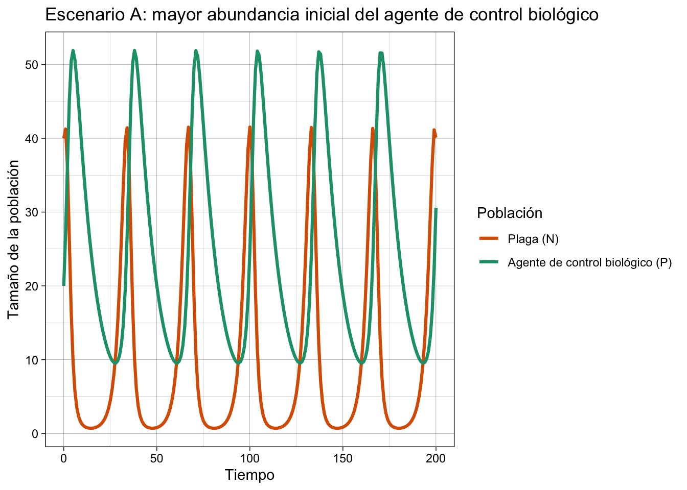
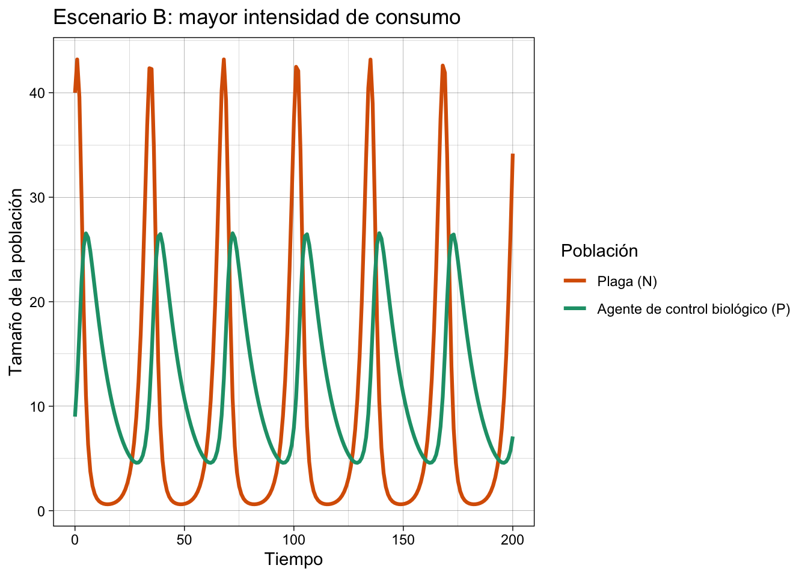
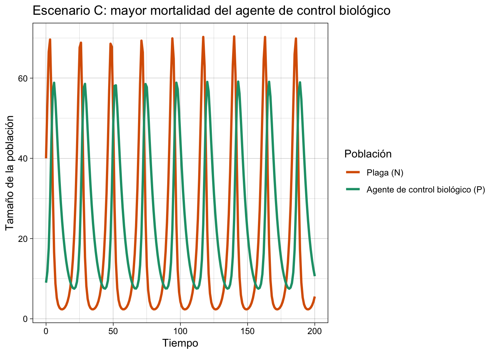
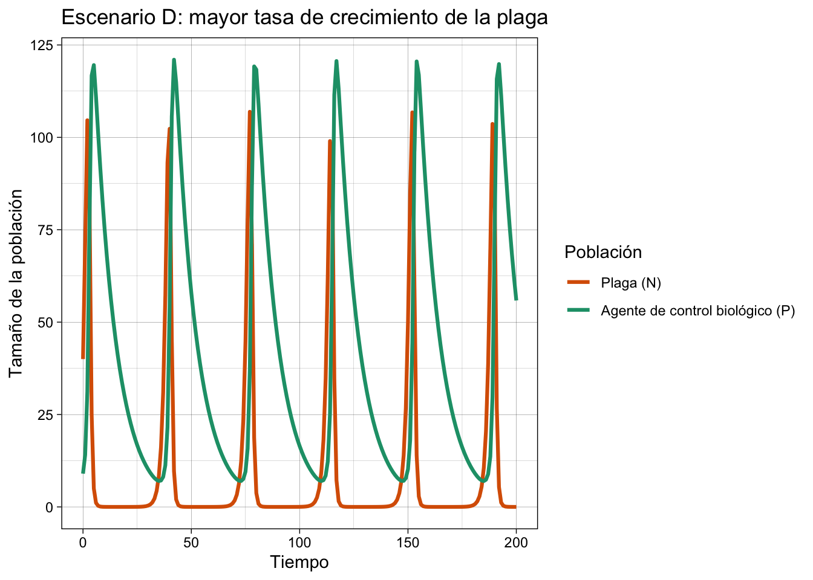
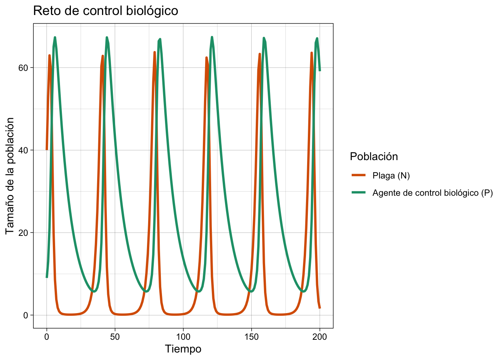

Code
# install.packages("deSolve")
# install.packages("reshape2")
library(deSolve)
library(ggplot2)
library(reshape2)# install.packages("deSolve")
# install.packages("reshape2")
library(deSolve)
library(ggplot2)
library(reshape2)Explorar la dinámica depredador-presa mediante el modelo Lotka-Volterra y analizar cómo las características de una plaga y de su agente de control biológico pueden modificar los resultados de una interacción utilizada como modelo simplificado de control biológico.
Consideremos una población de insectos herbívoros que funciona como presa y una población de depredadores que puede funcionar como agente de control biológico. El modelo Lotka-Volterra permite explorar cómo ambas poblaciones cambian a través del tiempo como resultado de su interacción.
En su formulación ecológica, el modelo describe una interacción presa-depredador. En este ejercicio lo utilizaremos como una representación simplificada del control biológico: la presa representa una especie plaga y el depredador representa un agente de control biológico. Por esta razón, en las ecuaciones conservaremos los términos presa y depredador, mientras que al interpretar los resultados utilizaremos su aplicación al manejo de plagas.
Las ecuaciones son:
\[ \frac{dN}{dt}=rN-aNP \]
\[ \frac{dP}{dt}=bNP-mP \]
donde:
r <- 0.5
a <- 0.02
b <- 0.01
m <- 0.1Una función en R es un bloque de código que realiza una tarea específica. La función recibe tres elementos:
t: tiempo.state: poblaciones de presas (N) y depredadores (P).parameters: parámetros r, a, b y m.lotka_volterra <- function(t, state, parameters) {
N <- state[1]
P <- state[2]
with(as.list(parameters), {
dN <- r * N - a * N * P
dP <- b * N * P - m * P
return(list(c(dN, dP)))
})
}state <- c(N = 40, P = 9)En el tiempo inicial tenemos 40 individuos de la plaga y 9 depredadores que actúan como agentes de control biológico.
time <- seq(0, 200, by = 1)parameters <- c(r = r, a = a, b = b, m = m)
out <- ode(
y = state,
times = time,
func = lotka_volterra,
parms = parameters
)
out <- as.data.frame(out)out_long <- melt(
out,
id.vars = "time",
variable.name = "Poblacion",
value.name = "Tamano"
)ggplot(out_long, aes(x = time, y = Tamano, color = Poblacion)) +
geom_line(linewidth = 1.1) +
labs(
title = "Modelo Lotka-Volterra: plaga y agente de control biológico",
x = "Tiempo",
y = "Tamaño de la población",
color = "Población"
) +
scale_color_manual(
values = c("N" = "#D95F02", "P" = "#1B9E77"),
labels = c("Plaga (N)", "Agente de control biológico (P)")
) +
theme_linedraw()
Pregunta 1. ¿Las dos poblaciones alcanzan sus valores máximos al mismo tiempo?
Pregunta 2. ¿Qué sucede con la población del agente de control biológico después de que aumenta la población de la plaga?
Pregunta 3. ¿Qué sucede posteriormente con la plaga cuando aumenta la abundancia del agente de control biológico?
Pregunta 4. Explica con tus palabras por qué las dos poblaciones presentan oscilaciones.
Crearemos una función que permita modificar las condiciones iniciales y los parámetros del modelo.
simular_lv <- function(N0 = 40, P0 = 9,
r = 0.5, a = 0.02,
b = 0.01, m = 0.1,
tiempo = 200) {
state <- c(N = N0, P = P0)
parameters <- c(r = r, a = a, b = b, m = m)
times <- seq(0, tiempo, by = 1)
resultado <- ode(
y = state,
times = times,
func = lotka_volterra,
parms = parameters
)
as.data.frame(resultado)
}También usaremos una función sencilla para graficar cada escenario.
graficar_lv <- function(datos, titulo) {
datos_long <- melt(
datos,
id.vars = "time",
variable.name = "Poblacion",
value.name = "Tamano"
)
ggplot(datos_long, aes(time, Tamano, color = Poblacion)) +
geom_line(linewidth = 1.1) +
labs(
title = titulo,
x = "Tiempo",
y = "Tamaño de la población",
color = "Población"
) +
scale_color_manual(
values = c("N" = "#D95F02", "P" = "#1B9E77"),
labels = c("Plaga (N)", "Agente de control biológico (P)")
) +
theme_linedraw()
}En cada escenario deberán:
En el modelo original comenzamos con 9 depredadores que representan al agente de control biológico. Ahora iniciaremos con 20.
Predicción. ¿Qué esperas que ocurra con la plaga al aumentar \(P_0\)? ¿Esperas que desaparezca?
escenario_A <- simular_lv(P0 = 20)
graficar_lv(escenario_A, "Escenario A: mayor abundancia inicial del agente de control biológico")
Pregunta 5. ¿Aumentar el número inicial de agentes de control biológico eliminó a la plaga? Describe los cambios que observaste en las dos poblaciones.
En el escenario original \(a=0.02\). Ahora prueba con \(a=0.04\).
Predicción. ¿Cómo esperas que una mayor intensidad de consumo modifique la abundancia de la plaga y del agente de control biológico?
escenario_B <- simular_lv(a = 0.04)
graficar_lv(escenario_B, "Escenario B: mayor intensidad de consumo")
Pregunta 6. ¿Cómo cambió la amplitud o el momento de las oscilaciones respecto al escenario original?
Ahora cambia la mortalidad del depredador de \(m=0.1\) a \(m=0.2\).
Predicción. ¿Qué consecuencias esperas para la plaga si el agente de control biológico presenta una mayor mortalidad?
escenario_C <- simular_lv(m = 0.2)
graficar_lv(escenario_C, "Escenario C: mayor mortalidad del agente de control biológico")
Pregunta 7. ¿Cómo respondió la población de la plaga? ¿Qué implicaciones podría tener esto para un programa de control biológico?
Cambia la tasa de crecimiento de la presa de \(r=0.5\) a \(r=0.8\).
Predicción. ¿El mismo agente de control biológico tendrá el mismo efecto sobre una plaga que crece más rápidamente?
escenario_D <- simular_lv(r = 0.8)
graficar_lv(escenario_D, "Escenario D: mayor tasa de crecimiento de la plaga")
Pregunta 8. Compara este escenario con el original. ¿Cómo cambió la dinámica de ambas poblaciones?
Modifiquen uno o dos parámetros del modelo para proponer un escenario en el que el agente de control biológico reduzca de manera importante la abundancia máxima de la plaga respecto al escenario original.
Antes de ejecutar el modelo, indiquen:
# Modifiquen los valores que consideren necesarios
N0_reto <- 40
P0_reto <- 9
r_reto <- 0.5
a_reto <- 0.02
b_reto <- 0.01
m_reto <- 0.1
reto <- simular_lv(
N0 = N0_reto,
P0 = P0_reto,
r = r_reto,
a = a_reto,
b = b_reto,
m = m_reto
)
graficar_lv(reto, "Reto de control biológico")
Comparen el máximo de la plaga en el escenario original y en su propuesta.
max(out$N)[1] 63.72432max(reto$N)[1] 63.72432Pregunta 9. ¿Su modificación redujo la abundancia máxima de la plaga? ¿Qué costo o limitación ecológica podría tener la estrategia propuesta?
En el modelo Lotka-Volterra clásico, la presa sigue la ecuación:
\[ \frac{dN}{dt}=rN-aNP \]
Si no hubiera depredadores (\(P=0\)), la ecuación quedaría:
\[ \frac{dN}{dt}=rN \]
Pregunta 10. ¿Qué tipo de crecimiento tendría la plaga en ausencia del agente de control biológico?
Pregunta 11. Considerando lo aprendido en el ejercicio de crecimiento logístico, ¿qué elemento de la dinámica poblacional no está incorporado en esta ecuación?